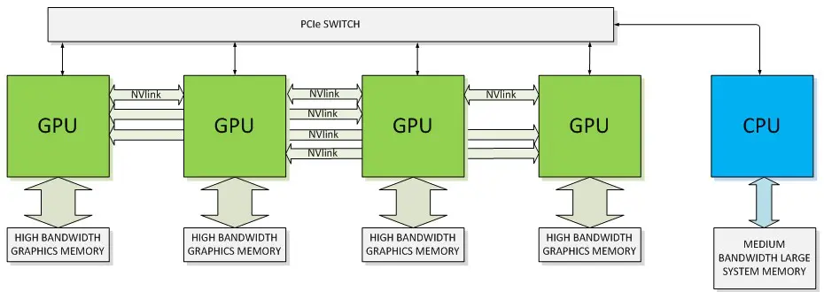

加速计算基本定义及工作原理揭秘¶
加速计算凭借其前所未有的处理能力，在云端基础设施中占据了核心位置，对于提升数据中心大规模信息处理效能方面发挥了重要作用。 加速计算还为更高效地训练和部署 GPT-4 等先进的生成式 AI 模型提供了必要的算力、内存和存储设施。 这种能力不仅加快了模型训练周期，还确保了对海量数据集的有效处理能力，并推动开发出更加复杂的模型。
Tip
加速计算利用 GPU、ASIC、TPU、FPGA 等专用硬件来执行计算，其效率高于传统的 CPU，提升了速度与性能表现。这种计算方法在 HPC、深度学习、ML、AI 等可以并行处理的任务上展现出了显著优势。
加速计算领域的纵深广阔，发展迅速，涵盖了 GPU、ASIC、TPU、FPGA、CUDA 以及 OpenCL 等众多软硬件解决方案以及各种网络技术。 此外，我们还探究了加速计算技术对生成式 AI 和数据中心等人工智能驱动的应用领域的影响。 下文有助于您深刻理解加速计算对未来技术格局产生的重大意义与潜在影响。
加速计算是什么？¶
加速计算是指利用专用硬件以超越 CPU 常规计算效能的高效计算处理。 加速计算能充分发挥 GPU、ASIC、TPU 和 FPGA 等设备的能力， 能够以更高的速度执行运算，从而加速整个计算过程。
这些加速设备特别适合执行高性能计算、深度学习、机器学习、人工智能以及大数据分析等能够细分为多个并行子任务的运算任务。 加速计算将某种工作负载 Offload 到专用硬件设备上，极大地提升了系统的效能。
加速计算的重要性¶
摩尔定律 （即在恒定成本条件下算力每两年翻一倍）的终结标志着 CPU 性能增长的放缓。 这一现象引发了业界向 加速计算 领域的转变，并对当前市值达一万亿美元的仅使用 CPU 的服务器市场的长期生存能力提出了质疑。 随着对高性能应用和系统需求的日益增长，传统的 CPU 方案在与更快、更经济、更高性能的加速计算技术竞争时，开始显得力不从心。
加速计算技术在当今时代之所以至关重要，是因为其擅长高效处理巨量数据，有力地推动了机器学习、人工智能、实时分析和科学研究的迅猛发展。 其在图形渲染、游戏开发、边缘计算及云计算等领域的影响力日益增强，构筑起了我们这个日益依赖数据驱动且高度互连世界中的数字基础设施（例如数据中心）。
加速计算的硬件、软件和网络解决方案¶
加速计算技术方案囊括了硬件、软件及网络的融合。这些方案旨在通过对复杂计算任务进行并行处理，以显著提升计算性能和效率。
硬件加速器¶
硬件加速器是加速计算的基础，其性能远超传统 CPU 单独所能达到的水平。 主要包括 GPU、ASIC 和 FPGA。
| - | GPU | ASIC | FPGA |
|---|---|---|---|
| 目的 | 通用计算 | 仅特定任务；完全定制 | 可编程执行多种任务 |
| 速率 | 高 | 最高 | 比 GPU 和 ASIC 低 |
| 兼容性 | 低 | 最低（单任务） | 高（完全可重构） |
| 成本 | >10,000 美元 | 5,000 美元或以下；取决于容量 | 3,000 美元到 10,000 美元 |
| 开发时间 | 短 | 最长（需要定制设计） | 中等（需要编程） |
| 效率 | 中等 | 最高 | 中等到高 |
| 软件和 API | CUDA、OpenCL | 为单个处理器定制 | Verilog、VHDL、OpenCL、HLS |
| 典型用例 | 游戏、AI/ML、图形处理 | 加密货币挖矿，特定计算 | 原型设计，适应性计算 |
图形处理器（GPU）¶
GPU 是一种广泛应用于各种计算密集型任务，擅长同时执行大量复杂的计算，因此非常适合用于 HPC 以及机器学习中的神经网络训练等任务。
在应用范畴上，术语“通用图形处理器”（GPGPU）常用来描述 GPU 在非图形渲染领域中，用于执行传统上由 CPU 处理的计算任务的情况。
在用于数据中心和诸如机器学习、人工智能等计算密集型任务的 GPU 市场中，NVIDIA 处于领先地位。 其数据中心场景下的主力 GPU 架构阵容覆盖了最新的 Hopper（H100）架构和先前的 Ampere（A100）架构。 值得注意的是，H100 系列 GPU 特别适用于加速 LLM、深度推荐系统、基因组学和复杂数字孪生体等应用的运算。
专用集成电路（ASIC）¶
ASIC 是一种专为执行特定任务而设计的定制芯片，而非像通用 CPU 那样旨在应对广泛多样的应用程序需求。 由于 ASIC 是针对某一特定功能量身定制的，因此在执行该任务时，其效率相比通用处理器更高。 ASIC 在速度、能耗以及整体性能上具有明显优势。
NPU 和 DLP 这两个术语经常用来指代专用于加速人工智能工作负载的 ASIC 类型。 在加速计算领域，TPU 就是一个 ASIC 的例子。TPU 是针对机器学习工作负载的硬件加速器， 已在谷歌数据中心范围内大规模部署并广泛应用，承担诸如自然语言翻译、Google Assistant 语音识别以及程序化广告排名等任务。
现场可编程逻辑门阵列（FPGA）¶
FPGA 是一种半导体集成电路，其特点是能够被重新编程以执行特定任务，且在效率上超过通用 CPU。 与 ASIC、GPU 和 CPU 中的固定架构不同，FPGA 硬件内部包含了可配置逻辑块和可编程互连元件。 这就意味着，即使在芯片投递并实际部署到系统之后，仍可根据具体应用需求重新编程和优化。
FPGA 由于其灵活性和并行计算能力，在数据中心，尤其是 HPC 和 AI/ML 加速领域的应用正日益受到欢迎。 然而，与 GPU 和定制化 ASIC 相比，FPGA 的运行速度较慢，并且其软件生态系统尚未得到充分发展。 FPGA 在 AI 工作负载应用中的普及进度相对较慢，主要原因在于其编程复杂性较高，这导致掌握相关专用技术的工程师数量有限。
软件和 API¶
加速计算利用诸如 CUDA 和 OpenCL 等 API 和相应的编程模型，实现软硬件加速器的交互。 这种优化可以改善数据流，从而实现性能显著提升、能耗效率优化、经济效益最大化以及结果精度增强。 API 和编程模型使开发者能够编写可在 GPU 上运行的代码，并利用软件库来实现高效算法的执行。
CUDA（统一计算架构）¶
CUDA 是由 NVIDIA 公司开发的一款专有并行计算平台和 API 模型。 它能够利用 NVIDIA GPU 进行通用目的的计算处理，从而显著提升计算任务的执行速度。 该平台还包含了 cuDNN、TensorRT、DeepStream 等深度学习库，以强化 AI 训练和推理任务的执行效能。
OpenCL（开放计算语言）¶
OpenCL 是一个专为并行计算设计的开源平台。它支持多种类型的计算硬件，涵盖了 CPU、GPU、FPGA 以及其他种类的处理器。 这种广泛的兼容性使得开发者能够最大限度地调动这些多样化硬件组件的并行计算潜能，从而加速各类计算任务。 OpenCL 的一项标志性特征是其跨平台兼容性，这意味着开发者编写的代码能够在多种不同厂商和架构的硬件上运行，实现计算任务的高效加速和资源灵活调度。
网络¶
网络在加速计算中发挥着关键作用，它促进了成千上万个处理单元（如 GPU 以及内存和存储设备）之间的信息交流。 各种网络技术被用来实现这些计算设备与系统其余部分之间的通信，以及网络内部多个设备间的数据共享。 常见的技术包括：
-
PCIe：是一种高速串行计算机扩展总线标准，提供了一种直接连接计算设备与 CPU 或内存通讯的方式。 在加速计算领域，PCIe 通常被用来连接 GPU 或其他加速器至主系统。
-
NVLink：是 NVIDIA 的专有高带宽、节能型互连技术，提供了远超 PCIe 的高数据传输速率。 该技术旨在促进 GPU 之间以及 GPU 与 CPU 之间更加高效的数据共享。
-
Infinity Fabric：AMD 的专有互连技术，用于连接芯片内的各种组件，包括 CPU、GPU 和内存。
-
Compute Express Link (CXL)：一种开放的互连标准，有助于减少延迟并增加 CPU 和加速器之间的带宽。 它将多个接口合并为一个到主机处理器的 PCIe 连接。
-
InfiniBand：一种高速、低延迟的互连技术，常用于搭建 HPC 设施。 它支持服务器集群和存储设备之间的高速互连。
-
Ethernet：这种广泛应用的、具有成本效益的、灵活的网络技术被用来在数据中心的服务器之间传输大量的数据， 这对于许多加速计算任务来说是至关重要的。但是，它不能提供与 NVLink 或 InfiniBand 相同的性能水平。
下图说明了使用 NVLink 和 PCIe 连接方法连接 CPU 的 GPU 的体系结构。

加速计算与生成式 AI¶
加速计算是开发和实现先进生成式 AI 模型的关键驱动力。生成式 AI 是指运用一系列复杂的算法机制， 能够基于训练数据集的统计特性自动生成新的数据样本，在图像、文本和语音等领域已有显著应用实例。
在生成式 AI 领域中，GAN、VAE 以及 OpenAI 的 ChatGPT 在内的 LLM 等模型被广泛应用。 这些模型涉及复杂的数学运算，并在大规模数据集上进行训练， 需要大量的算力和内存支持。更具体来说，模型规模、单层复杂性、序列长度以及多样化程度等因素都在不断促使对计算需求的增长。
加速计算在解决生成式 AI 所需的计算能力和内存需求方面起着特别重要的作用。 它可以加快训练速度、处理大型数据集、支持复杂模型、实现实时生成，并确保有效梯度计算。
-
加快训练速度
加速计算在生成式 AI 中最主要的作用在于缩短 GAN、VAE 以及 Transformer 模型的训练周期， 这些模型在传统的基于 CPU 的架构上通常需要数天、数周甚至数月的时间来训练。
诸如 GPU 和 TPU 这样的加速计算平台，专为并行处理而设计， 能够同时执行多个计算任务，从而极大地缩减训练所需时间。
-
处理大型数据集
生成式 AI 模型通常是在庞大的数据集上进行训练的。相较于传统 CPU，加速计算硬件能更高效地处理这类大型数据集。 此外，采用先进的内存架构，如某些 GPU 中配备的高带宽内存，使得在训练过程中能够有效地处理这些大型数据集。
-
支持复杂模型
加速计算带来的计算能力提升使得构建更加复杂且规模更大的模型成为可能，进而能够获得更好的性能表现。 例如，像 GPT-4 这样拥有 170 万亿个参数的大型 Transformer 模型，其诞生正是得益于加速计算的支持。
-
实现实时生成
对于某些应用来说，AI 模型需要实时（或接近实时）地生成内容。 这一点在诸如视频游戏中的 AI 及实时翻译等交互式应用中尤为重要。 加速计算确保了这些操作能够迅速执行，从而实现实时功能。
-
有效梯度计算
深度学习模型通过运用基于梯度的优化技术（如反向传播）来学习。 这些方法是一种迭代计算过程，会朝着减小误差或损失函数的方向调整模型的参数。 这些计算基于矩阵，因此具有高度并行化的特性，非常适合采用加速计算来进行处理。
加速计算与 AI 驱动的数据中心¶
加速计算平台的目标是加快在各种类型数据中心（包括企业、协同配置、超大规模/云计算、边缘以及模块）中的计算密集型工作负载处理， 这些工作负载涵盖 AI、数据分析、图形处理以及科学计算等领域。首要目标是在提高工作负载性能的同时降低每项查询的能耗与成本。
随着生成式 AI 和 LLM 在消费者、互联网公司、企业及初创公司中的兴起，AI 应用迎来了它的关键时刻。 这一热潮导致在数据中心和云平台上部署推理的需求显著增加。 目前，大多数推理工作负载在配备了处理能力的 CPU 和基本网络接口卡（NIC）上运行。但随着对性能、能效、成本效益以及功率限制不断提升， 业界正在转向采用加速计算技术，利用 GPU 和 ASIC 等专用硬件。
对于现代数据中心的未来愿景，其中之一就是建立一个持续运行的“AI 工厂”，该工厂负责处理并将数据转化为智能。 这些设施将采用 LLM、推荐系统以及最终的推理模型等 AI 模型。 此外，它们还将配置一个推理集群，以支持视频处理、文本生成、图像生成以及虚拟世界和模拟中的三维图形在内的各种工作负载。
加速计算 vs 计算优化¶
在设计和管理数据中心或选择云计算资源时，选用加速计算还是计算优化非常重要。 对于可以并行处理的任务，例如机器学习、AI 算法、图形渲染以及大规模仿真等，加速计算能带来更大的收益。 相反，对于那些需要强大单线程性能的任务，如提供网页内容服务、数据库操作或运行企业级应用程序，计算优化系统表现得更好。
下面，我们比较了加速计算和计算优化之间的主要区别：
| - | 加速计算 | 计算优化计算 |
|---|---|---|
| 定义 | 使用专门的硬件（例如 GPU） | 使用高性能 CPU |
| 用例 | 图形密集型，机器学习任务 | 高计算，服务器工作负载 |
| 速率 | 在适合的任务中表现出极高的速度（采用并行处理） | 速度快但适用于通用任务（单线程任务） |
| 成本 | 由于专用硬件，可能会造成成本较高 | 通常比加速版本便宜 |
| 硬件 | 依赖于特定硬件，例如 GPU、TPU 或 FPGA | 较少依赖硬件；主要使用高性能多核 CPU |